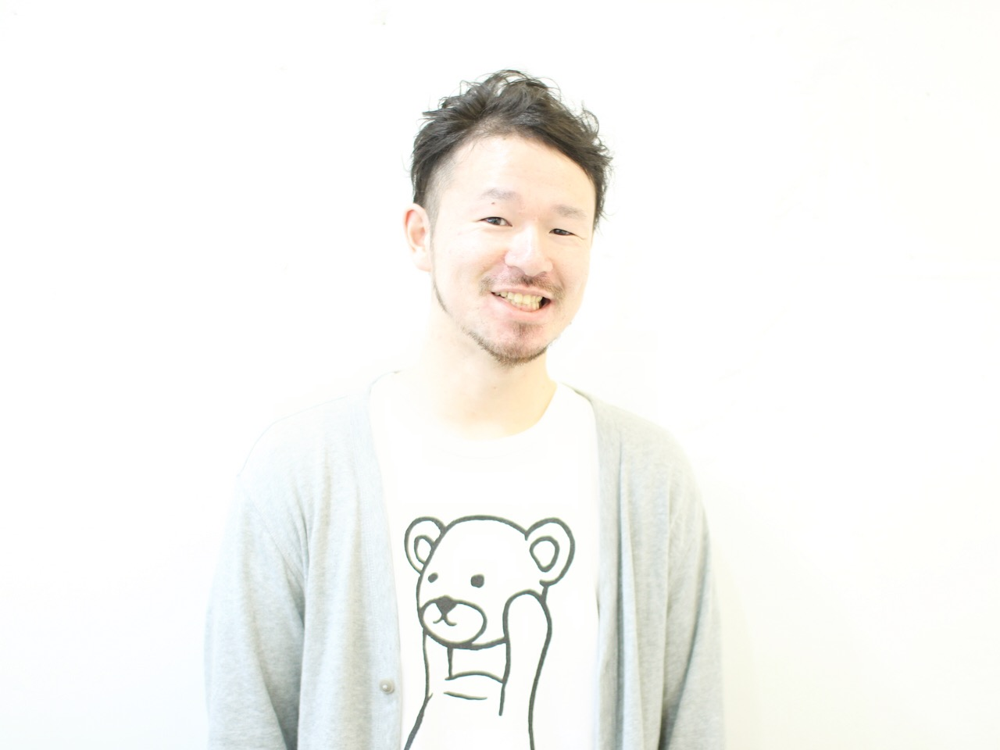

About
つくり続けること、そのもの。
PEAKHEADZは、菊田幸彦がつくる実務道具、Webサービス、 メディア、実験を束ねる活動母体です。 完成ではなく、稼働。到達ではなく、更新。
PEAKHEADZとは
形は違っても、作る。試す。動かす。続ける。
特定の業態やサービスに閉じず、つくっているものと、 稼働している状態を静かにつないでいます。
名前の由来
PEAKは頂点。HEADSもまた、頭・先端・頂点に近い意味を持つ言葉です。 似た意味の言葉を重ねることで、 成長し続けること、挑戦し続けること、 一度の到達で終わらず更新し続けることを表現しています。
Zは終わりではなく、次の循環へ向かう締めの記号。 ロゴの∞は、止まらない稼働、繰り返す成長、 在り続ける状態を表しています。
稼働哲学
PEAKHEADZは、完成をゴールにしません。
完成よりも稼働。到達よりも更新。停止よりも継続。 成果物だけではなく、つくり続ける状態そのものを大切にしています。
仕事も、コードも、ミシンも、発信も。 それぞれは別物ではなく、同じ「稼働」の表現です。
なぜ、つくり続けるのか。
誰かが安心して、また前へ進めるようにするためです。
Stay motion.

Profile
菊田 幸彦
PEAKHEADZの運営者。実務道具、Webサービス、メディア、実験を、 同じ稼働の中でつないでいます。
つくっているもの
- 実務の途中で使う、小さな道具
- 独立して動くWebサービス
- 言葉、写真、配信を置くメディア
- まだ名前のない実験
Yukihiko Kikuta
personal orbit
PEAKHEADZの奥にある、個人の視点と記録。